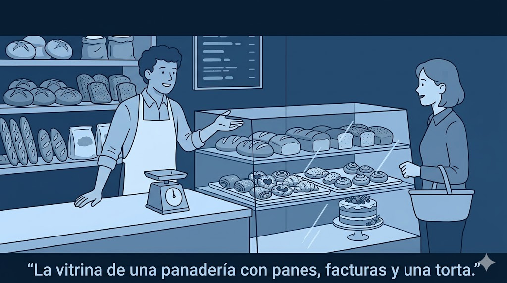
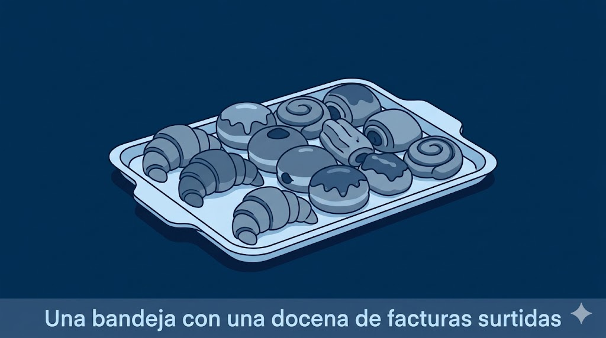

Qué verbos funcionan, cuáles evitar y cómo cambia el registro según el lugar, con una sección dedicada al español rioplatense.
Pedir algo en un mostrador o en una mesa parece simple, pero el verbo que elijas, el tiempo en que lo conjugues y el lugar donde estés cambian por completo el tono. Esta página reúne las fórmulas que suenan naturales, los errores que delatan al hablante de inglés y el vocabulario que más varía de un país a otro, con una sección dedicada a la Argentina.
Para pedir existen varias fórmulas naturales, de la más directa a la más cortés. Querer es la base: quiero es claro pero algo seco sin un por favor; quería, en imperfecto, suena más suave y educado; querría, en condicional, es el registro más formal. Dar y traer funcionan en forma de pregunta: ¿me da…? en el mostrador, ¿me trae…? en la mesa. El verbo poner (¿me pone un café?) sirve para casi cualquier cosa, comida o bebida, y es la fórmula por excelencia en España; se entiende en Latinoamérica, pero allí no es lo habitual. Y la fórmula para mí, … es comodísima cuando se pide en grupo.
Quería un café con leche, por favor.
I'd like a coffee with milk, please. — quería is softer than quiero.
¿Me da una botella de agua sin gas?
Could you give me a bottle of still water?
¿Me trae la carta, por favor?
Could you bring me the menu, please?
Para mí, una milanesa con puré.
For me, a milanesa with mashed potatoes.
¿Me pone una caña, por favor?
España Could you pour me a draft beer, please? — in Spain, poner is the default ordering verb, for any item, food or drink.
Querría reservar una mesa para dos.
I'd like to reserve a table for two. — querría is the most formal.
NOTA*
Spanish often softens a request by pushing the verb one step into the past or the conditional. Quería un café literally says "I wanted a coffee," but native speakers hear a polite "I'd like a coffee" — the past tense distances the want and takes the edge off. Querría (conditional) is a notch more formal again. Both are gentler than the bare present quiero. One more thing about the verb itself: across most of Latin America and Spain, the verb for placing an order is pedir, not ordenar. Ordenar comida is normal in Mexico and US Spanish (calqued from English "to order") but sounds foreign elsewhere — say pedir.
②
Los verbos que evitar
Verbs to avoid
Dos construcciones delatan al instante a quien traduce del inglés, y una tercera conviene usar con cuidado. Poder tener (¿puedo tener un café?) es un calco literal de can I have: en español no se "tiene" lo que se pide, así que no funciona. Gustar a secas describe lo que te agrada, no lo que pedís: me gusta el café dice que el café te cae bien, no que quieras uno. Me gustaría un café, en cambio, no es incorrecto y se escucha, pero suena más a un deseo que a un pedido concreto — como fórmula de cabecera es mejor quería o ¿me da…?.
¿Me da un café, por favor?
Use this — not the calque ¿puedo tener un café? ("can I have").
Quería una medialuna.
A firm request. Me gustaría una medialuna leans toward a wish, not an order.
Me gusta mucho el café de acá.
This states that you like the coffee — it is not a way to order one.
NOTA*
English "can I have …?" has no direct Spanish equivalent — you don't have (tener) what you order, you ask for it (pedir) or ask the server to give/bring it (dar/traer). So ¿puedo tener…? is the one to retire completely. Gustar is a different trap: it means "to be pleasing," so me gusta X reports a standing preference, not a request. The conditional me gustaría ("I would like / it would please me") can be used to order and is perfectly grammatical, but it carries a tentative, wishful tone — for a clean, native-sounding order, default to quería, querría, or ¿me da/trae…?.
③
El registro: del usted al vos
Register: from usted to vos
El mismo pedido cambia de tono según a quién y dónde. En el extremo formal — un restaurante elegante, una persona mayor, un trato de respeto — se usa usted y el condicional: ¿me podría traer…?, ¿sería tan amable de…?. En el registro neutro y cotidiano basta la pregunta con dar o traer: ¿me da…?, ¿me trae…?. Y en lo más informal — entre conocidos, en un bar — aparece el imperativo, siempre suavizado con por favor o con entonación de pregunta: dame…, traeme….
¿Me podría traer la cuenta, por favor?
Could you bring me the bill, please? — formal: usted + conditional.
¿Sería tan amable de traernos más pan?
Would you be so kind as to bring us more bread? — very formal.
¿Me das una servilleta?
Can you give me a napkin? — neutral / casual.
Traeme otra agua, por fa.
Rioplatense Bring me another water, please. — casual voseo imperative.
④
Según el lugar
By setting

La fórmula se ajusta al lugar. En un restaurante te sientas y pides en la mesa (para mí…, ¿me trae…?) y al final pides la cuenta. En un café o bar el pedido es más breve, en la barra o en la mesa: un cortado, por favor. En una panadería o confitería se pide por unidad o por peso: media docena de medialunas, un cuarto de…. En el supermercado, el único mostrador donde se pide es la fiambrería: ¿me da doscientos gramos de jamón cocido?. Y a nivel de calle — un kiosco, un puesto, un carrito — el intercambio es mínimo: ¿tienen…?, dame uno.
Para mí, el bife de chorizo, por favor.
For me, the sirloin steak, please. — restaurante.
¿Me da medio kilo de pan, por favor?
Could you give me half a kilo of bread? — panadería, by weight.
¿Me da trescientos gramos de queso?
Could you give me 300 grams of cheese? — supermarket deli counter.
¿Tenés monedas? Dame dos alfajores.
Rioplatense Got change? Give me two alfajores. — kiosco, street level.
⑤
Nota rioplatense
Rioplatense: how you ask
En la Argentina y el Uruguay el pedido se hace con vos, no con tú. Los verbos de pedido cambian su forma: ¿me traés…? (no ¿me traes?) y ¿me das…?. Al personal se lo llama mozo o moza (no camarero ni mesero), y para llamar su atención basta un disculpá o perdoná. El trato es cordial pero más informal que en otras regiones: el usted se reserva para personas mayores o contextos muy formales.
Mozo, ¿me traés la carta, por fa?
Rioplatense Waiter, could you bring me the menu, please? — mozo + voseo.
¿Me das un vaso de agua?
Rioplatense Can you give me a glass of water?
Disculpá, ¿me traés otra de estas?
Rioplatense Excuse me, could you bring me another one of these?
¿Tenés mesa para cuatro?
Rioplatense Do you have a table for four? — tener for availability is fine.
NOTA*
In Argentina and Uruguay, vos replaces tú, and the present-tense verb forms shift with it. For the ordering verbs: tú traes → vos traés, tú das → vos das (same), tú quieres → vos querés (and Spain's poner follows the same shift: pones → ponés). The pattern for -er/-ir verbs is a stressed final syllable: drop the -r of the infinitive and add an accent — traer → traés, poner → ponés. The affirmative vos command uses the same trick: traé, poné, dame (da + me). You'll be understood perfectly with tú forms, but matching the local vos makes you sound far less like a tourist.
⑥
Vocabulario: qué se pide
What you order (Argentina)

Más allá de cómo se pide, conviene saber cómo se llaman las cosas — y acá la Argentina tiene su propio mapa. En materia de dulces, la palabra clave es torta: lo que en México es pastel y en España tarta, en la Argentina es una torta (la de cumpleaños, de varias capas de bizcochuelo). Una tarta es otra cosa: una base de masa con relleno, y puede ser dulce (tarta de frutillas, pastafrola) o salada (tarta pascualina, de jamón y queso). Pastel casi nunca es un dulce: pastel de papa es un plato salado, y los pastelitos son masas fritas rellenas de membrillo o batata. Las facturas son la bollería dulce que acompaña el café o el mate — medialunas, vigilantes, bolas de fraile — y se compran por docena. Para el café: un cortado (espresso con un poco de leche), una lágrima (mucha leche, apenas café) o un café con leche.
Quería una docena de facturas surtidas.
Rioplatense I'd like a dozen assorted pastries. — facturas: the pastry category.
¿Me hace una torta de cumpleaños para diez personas?
Rioplatense Could you make me a birthday cake for ten? — torta = cake in Argentina.
Para mí, un cortado y dos medialunas de manteca.
Rioplatense For me, a cortado and two butter croissants.
Una porción de tarta de manzana, por favor.
A slice of apple tart, please. — tarta = tart/pie, sweet or savory.
NOTA*
The same three words rearrange across borders, which is exactly why a learner gets corrected. In Argentina (and most of South America) a layered celebration cake is a torta; a tarta is a single-crust tart or pie, sweet or savory; a pastel is usually savory (pastel de papa). In Mexico that celebration cake is a pastel — and beware, a torta there is a sandwich. In Spain the same cake is a tarta or pastel, and torta means something flatter and simpler. When in doubt anywhere, describing it (un postre con capas de bizcocho y crema) always lands.
⑦
Cerrar la cuenta
Closing out
Cerrar bien el pedido es tan importante como abrirlo. Para indicar si comes en el local o te lo llevas, se usa para acá o para llevar. Durante la comida, los pedidos se hacen igual que al principio: ¿me trae más agua?, ¿nos trae más pan?. Para terminar, se pide la cuenta: la fórmula neutra es ¿me trae la cuenta, por favor?; en la Argentina es comodísimo el ¿me cobrás?. Sobre la propina: lo habitual ronda el 10 %, y conviene no confundir el cubierto de la cuenta con la propina — es un cargo aparte por el servicio de mesa, y no va al mozo.
¿Me trae la cuenta, por favor?
Could you bring me the bill, please? — neutral.
¿Me cobrás?
Rioplatense Can I pay? — the everyday Argentine way to ask for the bill.
Un café para llevar, por favor.
A coffee to go, please.
¿Me trae un poco más de agua?
Could you bring me a little more water?
NOTA*
Two things trip up visitors at payment time in Argentina. First, the cubierto (or servicio de mesa) printed on the bill is a per-person cover charge for bread, water and table service — it is not a tip and does not go to the staff, so it doesn't replace the propina. Second, how to leave the tip: the social norm is about 10% (up to ~15% for great service), and cash left on the table or handed to the mozo is still the most reliable. Since a 2024 decree, tipping by card or digital wallet is now legal and some places offer it on the terminal, but adoption is uneven — many spots still can't add it to a card, so carry some cash for tips. Counter tip jars are often labeled Propi or Tips.
Evita el calco Nunca ¿puedo tener…?; tampoco me gustaría como pedido firme
Guía Rápida (Cheat Sheet)
A quick phrasebook for ordering — the neutral Latin American form alongside the Rioplatense (Argentina) version. Phrases are Spanish; situations are in English.